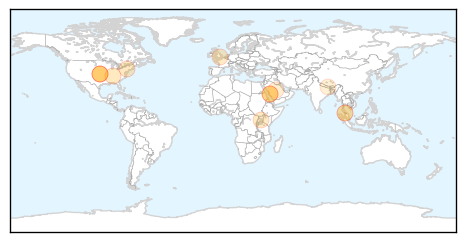

30 Day Trends
Web: 0 alerts, 0 warnings
Twitter: 1 alerts, 0 warnings
Top Articles:
- 0.981
- Saudi minister says MERS cases are reducing before haj
- 0.808
- New flu shot more effective than last year
- 0.734
- Kingsport Times-News: TDH: Be aware of Sickle Cell disease
- 0.714
- New York Medical Malpractice Lawyer Hospital Infections Serious Problem in NY
- 0.689
- ‘Suffocate and bake’: new US method of killing bird flu-infected poultry by heat stress prolongs suffering by up to 40 minutes
- 0.682
- Malaria deaths fall 60 percent since 2000: UN
- 0.680
- Diphtheria returns to Kerala; govt steps up drive
- 0.669
- Report More On Preventive Health Care – Journalists Urged
- 0.656
- Owners urged to confine dogs for two months - Veterinary Dept
- 0.649
- No sign of rabies on victims of dog bite so far - Nation
- 0.636
- Fifteen Egyptian pilgrims die in Mecca during Hajj
- 0.629
- Diphtheria returns to Kerala, two die
- 0.610
- Confine dogs for two months to prevent infection – BorneoPost Online
- 0.552
- Egyptian pilgrim death toll rises to 15: Health ministry
- 0.502
- Acute shortage of essential drugs in remote Bajura
Top Tweets:
-
No tweets found for Sep 20, 2015
Web/News Articles

Tweets

Article Locations
Article Confidences